Platform Changes
To use the new extension point, clients will require a dependency on org.eclipse.debug.core. Clients can then access any contributed step filters
using the new API: org.eclipse.debug.core.DebugPlugin.getStepFilters(String).
An example of the new extension point:
<extension point="org.eclipse.debug.core.stepFilters"> <stepFilter class="com.example.ExampleStepFilter" modelIdentifier="com.example.debug.model"> </stepFilter> </extension>
org.eclipse.core.resources/debug=true
org.eclipse.core.resources/notifications=true
in your .options file
or use the General > Tracing preference page to
enable it.
Example:
1. Modified files needed to enable the i18n support in the CSS bridge for the Polish locale:
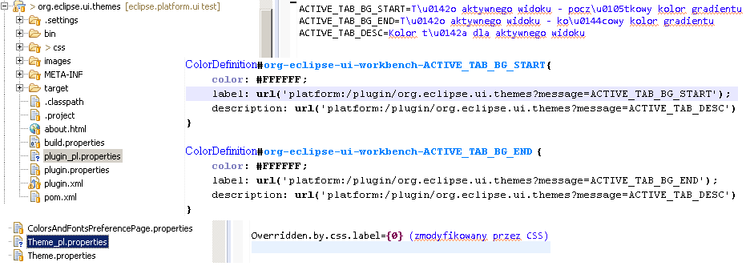2. Launch the Eclipse instance with the '-nl pl' command line arguments. Running CSS bridge with Polish locale:

StructuredViewer class now has an API to access the IStructuredSelection directly.
Examples:
IStructuredSelection sel = viewer.getStructuredSelection(); ITreeSelection treeSel = treeViewer.getStructuredSelection();Bye bye
(IStructuredSelection) viewer.getSelection(), we won't miss you!
LOCALE value in the application context was changed from
String to Locale (for performance reasons).
If you are injecting org.eclipse.e4.core.services.translation.TranslationService.LOCALE in your code, you
need to change the type from String to Locale.
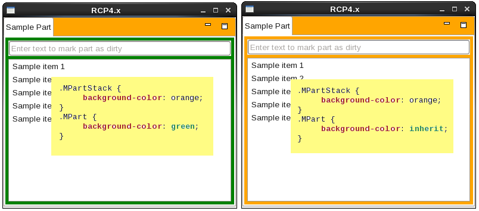
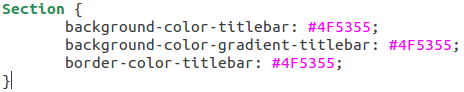
By using the same color for the background-color-titlebar and background-color-gradient-titlebar CSS property, like in the sample above, you get a solid background color.
For more information see bug 431635.
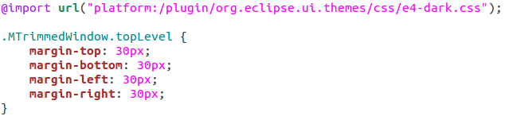
For more information see bug 458342.
org.eclipse.core.runtime.jobs.JobGroup) has been added that makes it
easier to implement parallel algorithms in Eclipse.
Job groups provide a simple way to manage a set of Eclipse Jobs that are responsible for pieces of the same large task. The API supports throttling, joining, cancellation, combined progress and error reporting for all of the jobs in the group. The job grouping functionality can be used to implement performance critical algorithms using cooperating jobs. More information can be found in bug 432049.
MenuItem.setToolTipText().
For an example, see the Menu tab in the ControlExample.
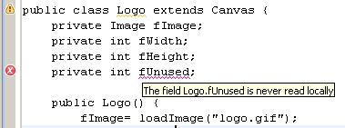
EHelpService in the IEclipseContext.
EHelpService is a thin wrapper to the WorkbenchHelpSystem in the Eclipse IDE and allows customers to
provide their custom implementation in Eclipse RCP applications.
Labels, Buttons, etc.)
are managed by the message registry.
To use the message binding for a messages class named MyMessages, you need to create a specialized
BaseMessageRegistry class like shown below:
@Creatable
public class MyMessageRegistry extends BaseMessageRegistry<MyMessages> {
@Override
@Inject
public void updateMessages(@Translation MyMessages messages) {
super.updateMessages(messages);
}
}
It can then be used like this:
@Inject
MyMessageRegistry registry;
@PostConstruct
public void init(Composite parent) {
Label myFirstLabel = new Label(parent, SWT.WRAP);
Label mySecondLabel = new Label(parent, SWT.NONE);
Label myThirdLabel = new Label(parent, SWT.NONE);
// bind myFirstLabel via method reference
registry.register(myFirstLabel::setText, (m) -> m.firstLabelMessage);
// bind mySecondLabel via method name
registry.register(mySecondLabel, "setText", "secondLabelMe
ssage");
// bind myThirdLabel via property name
registry.registerProperty(myThirdLabel, "text", "thirdLabelMessage");
}
The BaseMessageRegistry supports bindings for Java version before Java 8.
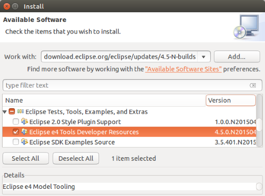
The XPath expression uses JXPath internally, so it should reference attributes of the model object, not the XML file.
These 2 samples are equivalent:
parentElementId="MyMenu1, MyMenu2"
parentElementId="xpath://*[@elementId='MyMenu1' or @elementId='MyMenu2']"
This feature opens up the possibility to:
- Add a fragment to multiple places in a model
- Target a fragment to multiple application models
- Specify attributes (such as tags) as the target
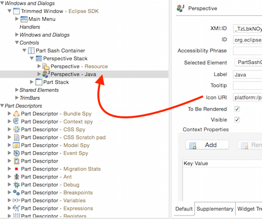
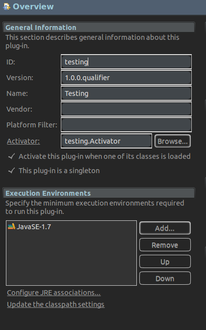
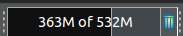
Equinox Changes
- New implementation of Http Whiteboard Draft specification. See Current Drafts.
- Simplify your web development by using whiteboard pattern to create assemblies of servlets, filters, context listeners and grouping them logically in shared contexts.
- The implementation is a near feature complete implementation of the draft specification.
- In addition to the Http Whiteboard specification, the Equinox Http Service implementation provides a complete imperative API in order to support the traditional direct registration programming model.
- Supports Servlet 3.0 features.
- Ongoing work will continue to provide more tests, improve support for Servlet 3.1 features and to improve stability and performance.
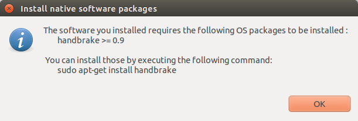
This functionality can be enabled by a new touchpoint instruction. For example:
org.eclipse.equinox.p2.touchpoint.natives.checkAndPromptNativePackage(distro:debian,package:handbrake,comparator:ge,version:0.9);
At this point, the support is limited to Ubuntu. Contributions to add this support for other OS are welcomed.
Integration with Tycho is available from 0.23.0-SNAPSHOT and above.
org.eclipse.jface.dialogs.AbstractSelectionDialog is an enhanced version of the existing
org.eclipse.ui.dialogs.SelectionDialog.
It has been added to the org.eclipse.jface bundle, where it is also available for Eclipse 4 RCP applications.
The AbstractSelectionDialog API supports generics and varargs.
org.eclipse.core.runtime.IAdaptable interface has been enhanced to return the requested type from
its getAdapter method:
public <T> T getAdapter(Class <T> adapter);
Implementations of this method should also be updated. This has already been done
for some platform APIs like org.eclipse.ui.part.WorkbenchPart. Callers and implementers
of these APIs can see compile errors or warnings due to this binary-compatible change.
For more information, see bug 442021.
SWT Changes
SWT.DATE and SWT.TIME styles. The new look and feel is as illustrated below:
GTK+ 2:
GTK+ 3:
SWT.Sleep and SWT.Wakeup events have been deprecated
in favor of the more generic events SWT.PreExternalEventDispatch and
SWT.PostExternalEventDispatch, respectively. Clients that were written
using the old event names should be updated to refer to the new events.
Control's background as transparent. The Color class now supports specifying an alpha value (integer: 0 to 255) for transparency.
Calling Control#setBackground(Color color) with a transparent color (color with alpha value '0'), sets the control's background as transparent.
List of new classes and APIs:
- Class:
org.eclipse.swt.graphics.RGBA - Constant:
SWT.COLOR_TRANSPARENT- This is a default transparent color - Methods added in
org.eclipse.swt.graphics.Color public Color (Device device, int red, int green, int blue, int alpha)public Color (Device device, RGB rgb, int alpha)public Color (Device device, RGBA rgba)public RGBA getRGBA()public int getAlpha ()
Note:
- Currently, SWT honors only extreme values for alpha i.e, '0'(transparent) or '255'(opaque).
- Setting transparent background color fails for some controls on all platforms, they show the default background color instead. For e.g. Text, Combo.
- Setting transparent background color for some controls works on GTK3 only, it fails on other platforms. For e.g. Table, Tree.
Snippet365 in action (Controls with SWT.COLOR_TRANSPARENT background and Shell with gradient background image)
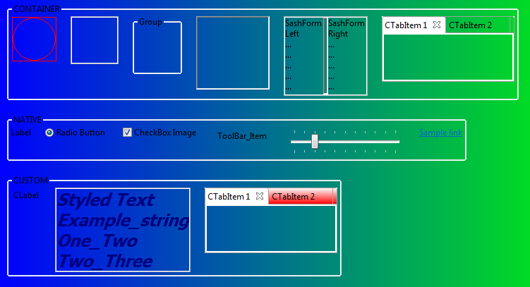
Two constructors have been added to the Image class. They accept
image-provider callbacks that allow clients to supply resolution-dependent versions
of images:
public interface ImageDataProvider {
public ImageData getImageData (int zoom);
}
public interface ImageFileNameProvider {
public String getImagePath (int zoom);
}
Depending on the user's monitor configuration, SWT will request images with the corresponding zoom level. Here's an example that displays 3 original images, followed by variants whose resolution changes depending your monitor's resolution: Snippet367.java.
Note that this is just the first step to support high-resolution images in
SWT and Eclipse-based applications. Work is underway to adopt the new APIs in
the platform. Futhermore, more work in SWT is required to properly
support drawing into high-resolution images via GC.
Browser#evaluate(String script, boolean trusted) has been added that allows the client to run
Javascript code in the Chrome security context or in the normal security context for SWT.MOZILLA
style browsers.
Support for auto text direction has been introduced at the SWT Control level. Auto text direction can be applied through the existing
Control#setTextDirection API. The new value for auto direction is expressed as
the bitwise disjunction of (SWT#LEFT_TO_RIGHT | SWT#RIGHT_TO_LEFT) bit fields. When
applied onto a Composite control, the auto base direction (similarly to LTR and RTL ones) is inherited by the
child components.
For example:
org.eclipse.swt.widgets.Table.setTextDirection(SWT.LEFT_TO_RIGHT | SWT.RIGHT_TO_LEFT);
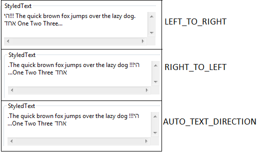
Note: Auto text direction is not yet supported:- in StyledText
- upon Control creation (but only through
Control#setTextDirectioncall once the Control has been created)